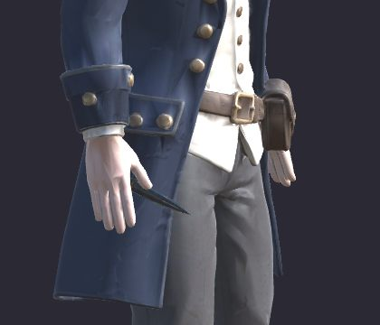
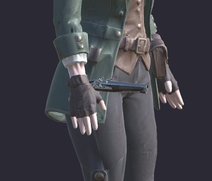
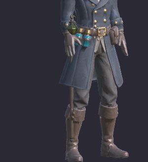
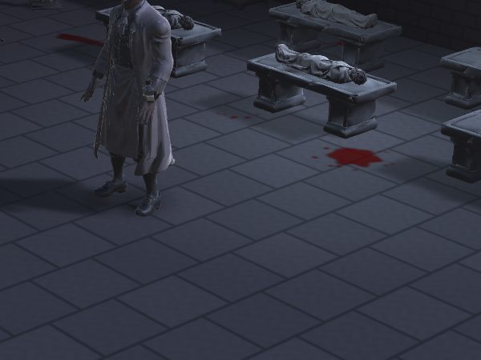
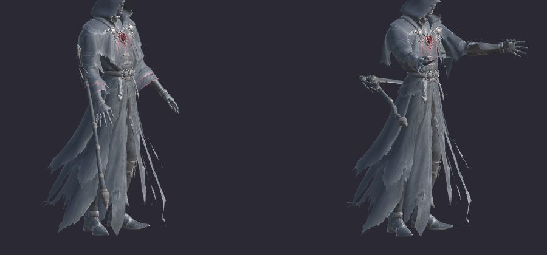

디자인 요청: 무기를 손에 "쥐게" 해 주세요
2026-11-13 · 개발 최동환 → 3D 디자인 · 11/16(월)까지
무기 8종 · 걷기 동작 잘 받았어요. 게임에 넣었습니다! 👍
그런데 손가락이 펴져 있어서 무기가 손에 안 쥐어져요.
→ 무기를 쥔 손으로 동작을 다시 + 손에 무기 붙일 자리 하나 부탁드려요.
지금 이렇게 보여요

명탐정: 단검이 손가락 사이로

저격수: 권총이 손 밖으로 삐져나옴

역병 의사: 지팡이가 매달려 있음
왜? 받은 동작은 무기 없이 만들어져서 손이 펴진 채예요. 개발이 코드로 붙여 봐도 손 모양은 바꿀 수 없어요.

아벨 모로(보스)도 문제예요.
메스가 하얀 코트 앞에 묻혀서 게임 화면에서 거의 안 보여요.
→ 메스를 몸 바깥쪽으로 들어 주세요.

왼쪽: 서 있기 · 오른쪽: 공격
사신도 같아요.
서 있을 땐 낫이 손에 대롱대롱 매달려 있고,
공격할 땐 낫이 뒤로 휘둘러져요.
→ 낫을 양손으로 쥐고 앞으로 휘두르게 해 주세요.
해 주실 일 (꼭 3개)
1
손에 "무기 자리" 만들기
- 캐릭터 5명(아군 3 · 아벨 · 사신) 뼈대에 빈 뼈 2개를 추가해 주세요.
- 이름: Socket_R (오른손 뼈 아래) · Socket_L (왼손 뼈 아래)
- 위치: 손이 무기를 쥐는 곳 가운데
- 방향: 아래 그림처럼 앞(Z) = 무기 끝, 위(Y) = 무기 위쪽
개발은 무기를 이 자리에 그대로 꽂기만 해요.
그래서 자리만 맞으면 어떤 동작에서도 딱 맞아요.
※ 다른 뼈 이름은 바꾸지 말아 주세요 (받은 동작이 다 연결돼 있어요).
2
동작 3개를 "무기 쥔 손"으로 다시: 대기 · 걷기 · 공격
- 무기 든 손은 손가락을 오므려 손잡이를 감싸게 해 주세요.
- 무기를 붙인 채로 보면서 만들어 주세요. 몸·코트에 박히지 않게요.
- 내보낼 땐 무기는 빼고 캐릭터만. 파일 이름은 지금과 똑같이 해 주세요 (덮어쓰기 OK).
| 누구 | 손에 들 것 | 이렇게 보이면 좋아요 |
|---|
| 명탐정 | 오른손 단검 | 칼끝을 아래로 들고 서 있기 → 찌르기·베기 |
| 역병 의사 | 오른손 지팡이 | 지팡이를 바닥에 짚고 서 있기 → 앞으로 내밀기 |
| 저격수 | 오른손 권총 | 총구를 아래로 → 팔 뻗어 적을 겨누고 쏘기 |
| 아벨 모로 | 오른손 메스
왼손 수은병 | 메스를 몸 바깥으로 들기 → 메스로 베기
보스라 멀리서 보여요. 동작을 조금 크게. |
| 사신 | 낫 (양손)
오른손이 자리, 왼손은 자루 아래쪽 | 낫을 세워 들고 서 있기 (날이 위) → 앞으로 크게 베기
낫 크기는 개발이 맞춰요. 손 모양·휘두르는 방향만 부탁해요. |
※ 예전 요청 M2(공격 동작 다시)와 M3(사신 낫)는 이걸로 대신해요.
3
무기 파일 3개만 고치기
| 무기 | 고칠 것 |
|---|
| 장총 (Musket) | 옆으로 누워 있어요 → 총구가 앞(Z)을 보게 돌려 주세요 |
| 지팡이 (Staff) | 기준점이 가운데서 벗어나 있어요 → 손으로 쥐는 높이로 |
| 사신 낫 (Scythe) | 누운 채 cm 단위로 와요 → 세워서(날 끝이 위) m 단위로, 기준점은 오른손 쥐는 곳 |
| 나머지 6개 | 그대로 괜찮아요 ✔ (기준점만 손잡이에 있는지 확인) |
여유 있으면
+
다른 동작도 쥔 손으로
방어 → 아이템 → 맞음 → 승리 순서로 해 주시면 좋아요. 못 하면 그 동작 동안만 개발이 무기를 잠깐 숨길게요.
+
두 번째 무기
저격수 장총(양손으로 드는 동작 필요) · 역병 의사 마법서(자리만 맞으면 그대로 될 수도). 녹슨 단검은 안 해도 돼요.
무기 자리가 어려우면?
기본 무기를 캐릭터 파일 안에 손에 쥔 채로 넣어서 보내 주셔도 괜찮아요.
대신 장착을 바꿔도 무기 모양은 그대로예요. 손 모양(2번)은 꼭 같이 해 주세요.
보내는 법
- 지금처럼 깃 푸시 (폴더·파일 이름 그대로)
- 캐릭터마다 서 있는 자세 · 공격 자세 사진 1장씩 같이 주시면 바로 비교할게요.
- 받은 날 바로 게임에 넣고 화면 사진 보내 드릴게요.
답 (번호 + 날짜만): 예) "1·2·3 → 11/15", "자리는 어려움, 파일에 넣어서 보냄"
1 무기 자리: ________ 2 동작 3개: ________ 3 무기 파일: ________ 여유분: ________